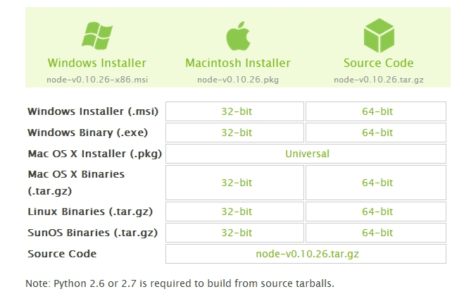
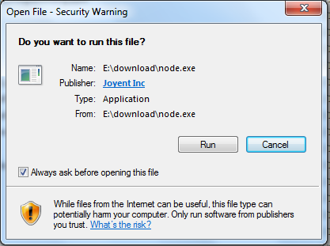
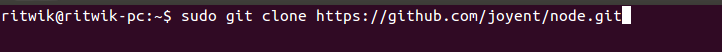
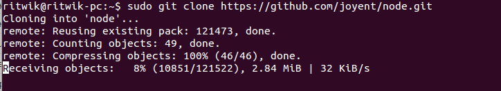
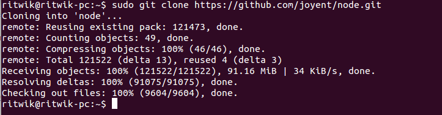
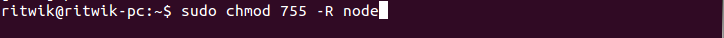
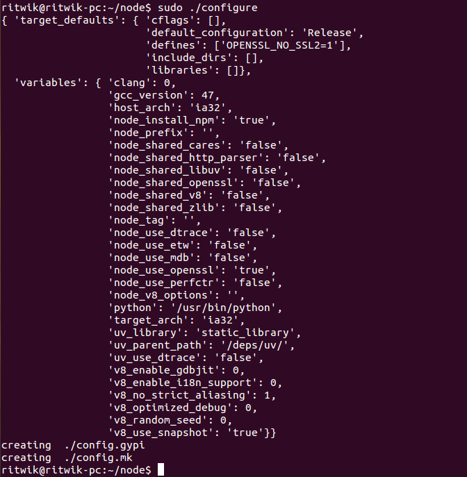
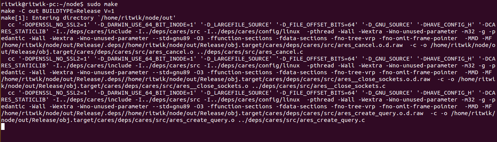
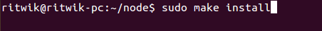
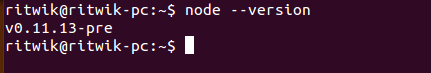

Node.js 安装配置
本章节我们将向大家介绍在window和Linux上安装Node.js的方法。
本安装教程以Node.js v0.10.26 版本为例。
Node.js安装包及源码下载地址为：http://www.nodejs.org/download/。

根据不同平台系统选择你需要的Node.js安装包。注意：Linux上安装Node.js需要安装Python 2.6 或 2.7 ，不建议安装Python 3.0以上版本。
Windowv 上安装Node.js
Windows 安装包(.msi) :
32 位安装包下载地址 : http://nodejs.org/dist/v0.10.26/node-v0.10.26-x86.msi
64 位安装包下载地址 : http://nodejs.org/dist/v0.10.26/x64/node-v0.10.26-x64.msi
安装步骤：
步骤 1 : 双击下载后的安装包 node-v0.10.26-x86.msi，如下所示：

步骤 2 : 点击以上的Run(运行)，将出现如下界面：

步骤 3 : 勾选接受协议选项，点击 next（下一步） 按钮 :

步骤 4 : Node.js默认安装目录为 "C:\Program Files\nodejs\" , 你可以修改目录，并点击 next（下一步）：

步骤 5 : 点击树形图标来选择你需要的安装模式 , 然后点击下一步 next（下一步）

步骤 6 :点击 Install（安装） 开始安装Node.js。你也可以点击 Back（返回）来修改先前的配置。 然后并点击 next（下一步）：

安装过程：

点击 Finish（完成）按钮退出安装向导。

检测PATH环境变量是否配置了Node.js，点击开始=》运行=》输入"cmd" => 输入命令"path"，输出如下结果：
PATH=C:\oraclexe\app\oracle\product\10.2.0\server\bin;C:\Windows\system32; C:\Windows;C:\Windows\System32\Wbem;C:\Windows\System32\WindowsPowerShell\v1.0\; c:\python32\python;C:\MinGW\bin;C:\Program Files\GTK2-Runtime\lib; C:\Program Files\MySQL\MySQL Server 5.5\bin;C:\Program Files\nodejs\; C:\Users\rg\AppData\Roaming\npm
我们可以看到环境变量中已经包含了C:\Program Files\nodejs\
检查Node.js版本

Windows 二进制文件 (.exe)安装 :
32 位安装包下载地址 : http://nodejs.org/dist/v0.10.26/node.exe
64 位安装包下载地址 : http://nodejs.org/dist/v0.10.26/x64/node.exe
安装步骤
步骤 1 : 双击下载的安装包 Node.exe ，将出现如下界面 :

点击 Run（运行）按钮将出现命令行窗口：

版本测试
进入 node.exe 所在的目录，如下所示：

如果你获得以上输出结果，说明你已经成功安装了Node.js。
Linux上安装 Node.js
Ubuntu 源码安装
以下部分我们将介绍在Ubuntu Linux下安装 Node.js 。 其他的Linux系统，如Centos等类似如下安装步骤。
在 Github 上获取 Node.js 源码：

在完成下载后，将源码包名改为 'node'。

修改目录权限：

使用 './configure' 创建编译文件。

编译: make。

完成安装: make install。

最后我们输入'node --version' 命令来查看Node.js是否安装成功。

Ubuntu apt-get命令安装
命令格式如下：
sudo apt-get install nodejs sudo apt-get install npm
centOS下安装nodejs
1、下载源码，你需要在http://nodejs.org/下载最新的Nodejs版本，本文以v0.10.24为例:
cd /usr/local/src/ wget http://nodejs.org/dist/v0.10.24/node-v0.10.24.tar.gz
2、解压源码
tar zxvf node-v0.10.24.tar.gz
3、 编译安装
cd node-v0.10.24 ./configure --prefix=/usr/local/node/0.10.24 make make install
4、 配置NODE_HOME，进入profile编辑环境变量
vim /etc/profile
设置nodejs环境变量，在export PATH USER LOGNAME MAIL HOSTNAME HISTSIZE HISTCONTROL 一行的上面添加如下内容:
#set for nodejs export NODE_HOME=/usr/local/node/0.10.24 export PATH=$NODE_HOME/bin:$PATH
:wq保存并退出，编译/etc/profile 使配置生效
source /etc/profile
验证是否安装配置成功
node -v
输出 v0.10.24 表示配置成功
npm模块安装路径
/usr/local/node/0.10.24/lib/node_modules/
注：Nodejs 官网提供了编译好的Linux二进制包，你也可以下载下来直接应用。